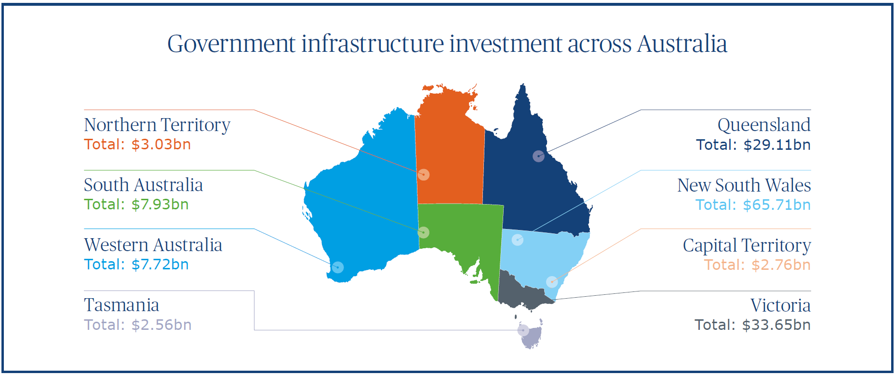
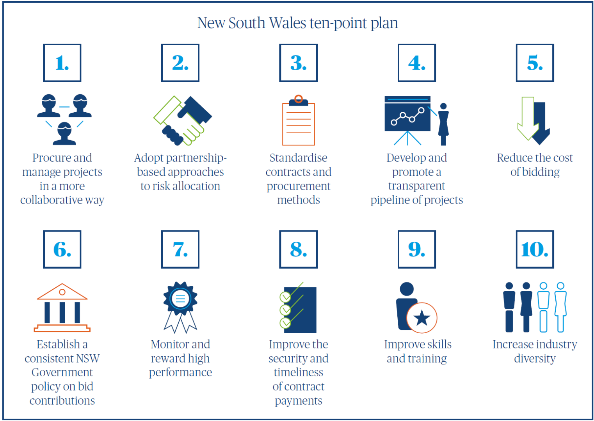

Seeking social value: Increased investment requires modified governance models

Grant Bowery
Director, Australia
As Australia ploughs billions of dollars into its public transport infrastructure, a rethink is required to improve project prioritisation and ensure the public receives best value from extraordinary levels of investment.
The scale of Australia’s current infrastructure investment programme is as welcome as it is unprecedented, fuelling growth and addressing growing population demands.
In particular, we are seeing an escalation in the transport sector, with the Australian Federal Government’s Infrastructure Investment Program committing more than AU$75bn over the next ten years to boost the economy, reduce city congestion, and facilitate safer rural roads.
On the back of this federal support, a range of new state and territory sponsored projects have emerged, including Sydney Metro and Light Rail Programs, City Link Brisbane, Perth’s Metronet, rail packages in Victoria, and Western Sydney Airport. The New South Wales (NSW) Government alone has committed AU$52bn over the next four years.
On the face of it, this is all good news for the infrastructure sector and the Australian public. However, closer inspection reveals that, as a consequence of this boom, we are actually witnessing a significant fall in the effectiveness of project planning and delivery and the public is not gaining the value that it deserves from this level of investment.
The need for reform
Reform of governance structures and policies across Australia’s complex federal, state and local government structure is vital to ensure public infrastructure renewal continues. A rethink will ensure we capitalise across the project life cycle through:
- Improved project prioritisation: Identify and prioritise the business case for investment
- Collaborative delivery: Engage the project delivery supply chain to maximise return on investment
Capitalising on an investment boom
The driving force behind this investment boom is capital recycling, an innovative strategy which transfers the capital value of public assets to provide much-needed funding for new infrastructure projects.
The concept is simple; state governments sell or lease to the private sector their stock of public assets, such as ports, airports, power and water networks. They then reinvest the capital raised in new economy-driving assets such as roads and public transportation systems.
It has been a popular idea which the federal government has supported with incentives such as the Asset Recycling Fund. This mechanism provides states with an additional 15 percent of the estimated proceeds of each deal. To date some AU$3.3bn has been used to support AU$22bn raised from the sale of power grids and ports across Australia.

Infrastructure Australia, the body set up to prioritise the nation’s infrastructure investment, agrees and in its 2016 infrastructure plan urged federal government to continue incentivising state and local government to recycle publicly owned assets where appropriate.
Yet after the flush of excitement, there is now evidence that many of these 50-100-year deals have resulted in a reduction in value to the taxpayer.
Improved project prioritisation
Capital recycling can provide a much-needed boost to the economy. But if not approached with a long-term view, this once in a lifetime opportunity can drive the wrong behaviours.
In major cities like Sydney, where competing social and political pressures make selection of the right infrastructure investment targets critical, problems are starting to show. Without the right level of governance, the cash raised from asset sales does not always find its way to the most needed projects.
Establishing robust business cases to sit behind each deal will ensure that community needs are properly understood and all options are considered, so countering the tendency of politicians to back voter-friendly projects rather than those with longer-term value.
Infrastructure Australia is aware of both the opportunities and the challenges of selecting the right projects and its investment priority list is a step towards countering this behaviour. Yet too often this list is overlooked as state or regional political priorities take precedence. Its recommendation for a set of National Governance Principles is crucial to ensuring that major public infrastructure investments deliver the best outcomes for the community and the best value for taxpayers.
Collaborative delivery to drive success
Greater collaboration across Australia’s fragmented layers of government is an important step towards depoliticising the debate over how best to spend the funds raised through capital recycling and so ensure that investments contribute to a wider regional or strategic benefit.

The formation of focused development authorities is one obvious way to do this. Acting alone, local authorities typically do not have the capability or capacity to deliver one-off major infrastructure projects. Success comes through working in collaboration with other stakeholders and the supply chain.
For example, both Melbourne and Sydney have over 30 local councils across their metropolitan areas, each competing for investment to deliver housing, transport and business growth. Yet state government retains a controlling interest, often creating a significant difference in public policies, standards and investment priorities.
But we can get it right. Western Sydney City Deal is a prime example of a forward-thinking collaboration which provides an alternative structure for infrastructure planning. As a partnership between the federal, local, and the NSW governments, it is a genuine leap forward in collaboration that will unlock opportunities in education, business and employment.
The NSW Government understands the need to improve project delivery. Its new ten-point plan recognises that infrastructure can only be delivered by engaging, supporting and collaborating with the private sector. It sets out to encourage supply chain capacity and in the knowledge that value for money does not mean lowest price.
The objectives of the ten-point plan are laudable and should be supported. However, the government should be held accountable in the delivery of these principles, and not allow them to be watered down by systematic procurement processes.
Obtaining social value
There is a once in a lifetime opportunity to capitalise on the investment being made available through capital recycling and other innovative financing vehicles. We must not only choose the right schemes to invest in but also work together to maximise the social value created by these huge investments.
Fundamentally, that means lifting the standard of business case planning and selecting projects that prioritise social outcomes for the public in return for the vast amounts of investment being driven into the nation’s infrastructure. Capital recycling can provide a much-needed boost to the economy. But if not approached with a long-term view, this once in a lifetime opportunity can drive the wrong behaviours.
This content is part of the 360°View, issue 10